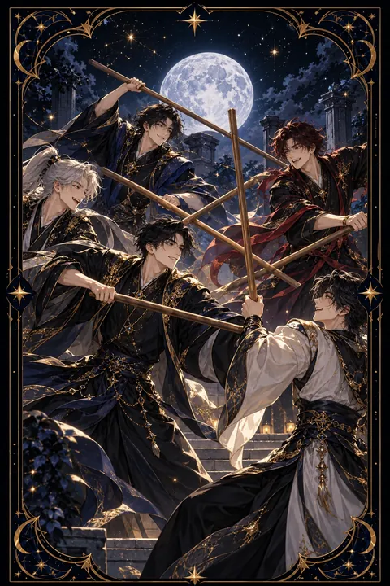

완드 5 카드 — 부딪치며 단련되는 경쟁
완드 5 카드 한눈에 보기
완드 5 카드 상징 읽기

동네보살의 카드 그림은 전통 라이더–웨이트 덱의 뜻을 새 그림으로 옮긴 것입니다. 아래 상징 설명은 전통 덱의 그림을 기준으로 합니다.
완드 5에는 다섯 명의 젊은이가 각자 지팡이를 들고 뒤엉켜 겨루는 장면이 그려져 있습니다. 지팡이들이 서로 다른 방향으로 교차하고 있어 한눈에 보아도 소란스럽고 질서가 없는 상황임을 알 수 있습니다.
인물들의 옷 색깔과 무늬가 모두 다른 것은 저마다 다른 생각과 입장을 대변합니다. 누구도 같은 편을 이루지 않고 제 목소리를 내고 있어 의견 충돌과 경쟁을 상징합니다.
하지만 그림 속에는 다친 사람이나 쓰러진 사람이 보이지 않습니다. 표정에도 증오보다는 열기가 담겨 있어 이 다툼이 상대를 해치기 위한 싸움이 아니라 힘과 기량을 겨루는 연습에 가깝다는 점을 보여 줍니다. 불의 원소인 완드답게 이 카드의 갈등은 에너지가 넘쳐 부딪히는 모습이며 잘 다루면 성장의 계기가 됩니다.
완드 5 카드 정방향 뜻
정방향 완드 5는 여러 사람의 의견과 욕심이 한곳에서 부딪치는 상황을 보여 줍니다. 경쟁자가 늘어나거나 회의에서 주장이 엇갈리거나 사소한 일로 신경전이 벌어질 수 있습니다.
이 카드의 갈등은 대체로 파괴적이지 않습니다. 서로를 무너뜨리려는 다툼이라기보다 각자의 힘을 시험하는 경쟁에 가깝습니다. 치열한 경쟁 속에서 실력이 단련되고 여러 의견이 부딪히며 더 나은 아이디어가 걸러지기도 합니다.
중요한 것은 규칙과 태도입니다. 목소리의 크기로 이기려 하기보다 근거와 결과로 말하고 상대의 주장도 끝까지 들어 보세요. 모든 논쟁에 끼어들 필요는 없으니 정말 중요한 쟁점만 골라 힘을 쓰는 것이 좋습니다. 공정하게 겨루는 경험이 쌓이면 이 소란은 성장의 발판이 됩니다.
완드 5 카드 역방향 뜻
역방향 완드 5는 두 갈래의 해석이 가능합니다. 첫째는 이어지던 다툼이 가라앉고 서로 타협점을 찾는 흐름입니다. 지친 사람들이 지팡이를 내려놓고 대화로 문제를 풀어 갈 여지가 생깁니다.
둘째는 갈등을 피하려고 할 말을 삼키는 상태입니다. 겉으로는 평온하지만 속으로 불만이 쌓이고 마음속에서 여러 생각이 서로 다투며 스스로를 지치게 만들 수 있습니다.
어느 쪽이든 핵심은 솔직하고 차분한 대화입니다. 피한다고 갈등이 사라지지는 않으며 오래 묵힌 불만은 더 큰 충돌로 번지기 쉽습니다. 가장 중요한 한 가지를 골라 감정을 가라앉힌 뒤 이야기해 보세요. 서로 이기려는 대화를 함께 해결하는 대화로 바꾸면 관계가 오히려 단단해집니다. 먼저 손을 내미는 쪽이 오히려 판을 주도하게 되는 경우가 많습니다.
연애에서 완드 5 카드
혼자인 분이라면 호감 가는 상대를 둘러싸고 경쟁자가 나타날 수 있는 시기입니다. 조급하게 상대를 이기려 하기보다 자신만의 매력을 자연스럽게 보여 주는 편이 효과적입니다. 밀고 당기는 과정 자체를 즐기는 여유도 필요합니다.
연애 중이라면 사소한 의견 차이로 다툼이 잦아질 수 있습니다. 옳고 그름을 끝까지 따지는 말다툼은 두 사람을 지치게 하니 규칙을 정해 대화해 보세요. 감정이 격해질 때는 잠시 시간을 두고 한 번에 한 가지 문제만 이야기하는 것이 좋습니다. 이 시기의 부딪침은 서로를 더 깊이 이해하는 과정이 될 수 있습니다. 카드가 거꾸로라면 갈등을 피하느라 서운함을 숨기고 있을 수 있으니 부드러운 말투로 속마음을 꺼내 보세요. 다툼 뒤에는 서로 고마운 점을 한 가지씩 말해 주는 습관이 관계를 부드럽게 만듭니다.
재회·속마음 질문에서 완드 5 카드
재회 질문에서 완드 5가 나오면 예전의 다툼과 앙금이 여전히 가라앉지 않은 채 남아 있다는 뜻입니다. 다시 만나더라도 같은 문제로 부딪칠 가능성이 있으므로 무엇 때문에 갈등이 생겼는지 먼저 돌아보는 것이 좋습니다. 상대 곁에 다른 사람이 있거나 경쟁 구도가 생길 수도 있습니다. 서두르기보다 감정이 가라앉은 뒤 차분하게 대화를 시도하세요. 뒤집혀 나왔다면 서로의 날이 무뎌지며 화해의 여지가 생기는 흐름이라 진심 어린 사과가 좋은 출발점이 됩니다. 다시 만나고 싶다면 누가 잘못했는지를 따지기보다 앞으로 어떤 방식으로 의견 차이를 풀어 갈지 먼저 이야기해 보세요. 같은 갈등이 되풀이되지 않을 약속이 있어야 재회가 오래 이어집니다.
일·금전에서 완드 5 카드
일과 직장에서는 경쟁이 치열해지고 의견 충돌이 잦아지는 흐름입니다. 같은 자리를 두고 겨루거나 팀 안에서 방향을 두고 논쟁이 벌어질 수 있습니다. 그럴수록 언성을 높이기보다 자료와 성과로 자신의 입장을 뒷받침하는 편이 유리합니다. 역할과 규칙을 명확히 정하면 불필요한 소모가 줄어듭니다.
금전 면에서는 같은 몫을 두고 여럿이 다투는 상황이 생기기 쉽습니다. 거래 조건을 문서로 남기고 약속을 분명히 남겨 두면 뒷말이 생길 틈이 좁아집니다. 경쟁이 심한 시장이라면 가격보다 차별화된 강점을 내세우는 전략이 효과적입니다. 경쟁 상대에게서 배울 점을 찾아보는 태도도 실력을 키우는 데 도움이 됩니다.
완드 5 카드는 예일까 아니오일까
의견이 부딪치고 경쟁이 치열한 카드여서 지금 바로 순조롭게 풀리기는 어렵다는 뜻으로 아니오에 가깝게 봅니다. 거꾸로 나오면 다툼이 가라앉는 흐름이라 대화에 따라 조건부가 됩니다.
자주 묻는 질문
완드 5 카드 역방향은 나쁜 뜻인가요?
역방향 완드 5는 두 갈래의 해석이 가능합니다. 첫째는 이어지던 다툼이 가라앉고 서로 타협점을 찾는 흐름입니다. 지친 사람들이 지팡이를 내려놓고 대화로 문제를 풀어 갈 여지가 생깁니다.
완드 5 카드가 연애 질문에 나오면요?
혼자인 분이라면 호감 가는 상대를 둘러싸고 경쟁자가 나타날 수 있는 시기입니다. 조급하게 상대를 이기려 하기보다 자신만의 매력을 자연스럽게 보여 주는 편이 효과적입니다. 밀고 당기는 과정 자체를 즐기는 여유도 필요합니다.
타로 카드는 어떻게 뽑나요?
타로 카드 페이지에서 78장을 섞으면 그중 22장이 펼쳐집니다. 마음이 가는 세 장을 고르면 과거·현재·미래 자리에 놓이고, 한 장씩 뒤집어 자리와 방향에 맞는 풀이를 읽습니다. 정방향과 역방향은 섞는 순간 정해집니다.